陣馬山
| 日付 | 2015年9月5日（土） |
|---|---|
| 山域 | 高尾周辺 |
| メンバー | 家族（妻、長女・4歳、長男・2歳） |
| 山行形態 | 子連れ日帰り |
| アクセス | 車 |
| ルート (Map) | 和田峠 (9:04) - (10:05) 陣馬山 (11:43) - (12:07) 和田峠 |
夏休みが終わってからずっと天気が悪く、ここ1か月ぐらい晴天を見ていない。
本日の予報は曇時々晴で快晴とはいかないが、貴重な1日である。
今回は3度目の陣馬山に行ってみることにする。
陣馬山の北にある和田峠からだと30分くらいで山頂に行けるため、
初めて息子を1から歩かせてみる予定だ。
和田峠の駐車場に到着。標高690m。
人気の陣馬山まで最も容易に登れる場所のため、駐車場は混雑しているかと思ったら、がらがらだ。
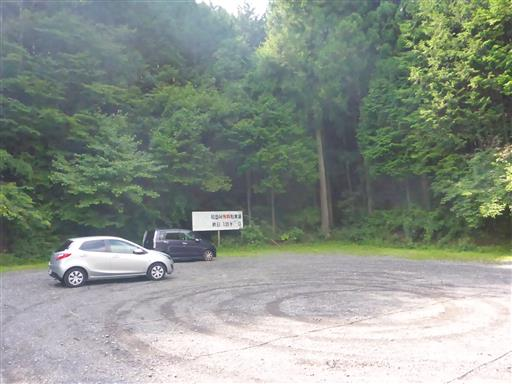
駐車料金は800円。この値段がネックなのかもしれない。
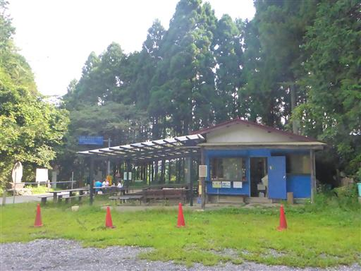
準備を整えたらさっそく登山開始。
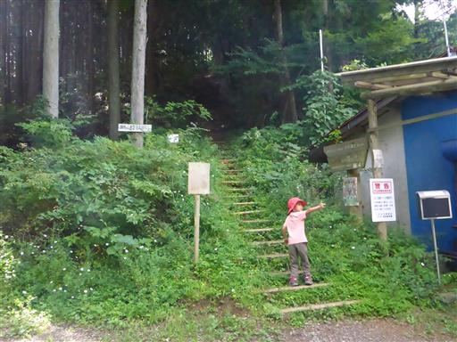
短い登山道だが傾斜はそこそこあり、階段が続く。
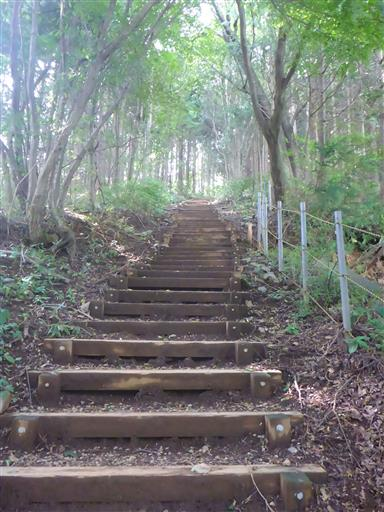
息子は頑張って登っている。特にキャリアに乗せてとも言わない。
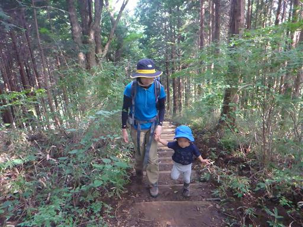
姉弟で並んで歩くと、ぐりとぐらみたいだ。
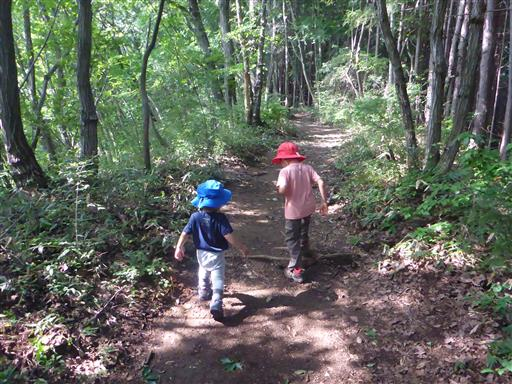
登山道の途中に大量のドングリが落ちている。
まだ緑色のドングリだが、ここ最近の強雨で落ちてしまったのだろうか？
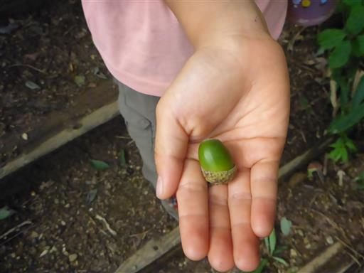
子供たちはドングリ拾いを始める。こうなるとほとんど前に進まない。
今日は時間が余るため、自由に遊ばせておく。
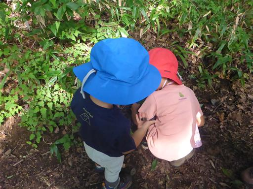
袋にドングリを次々と入れている。
こんなにたくさん、どうするつもりなのだろう…？
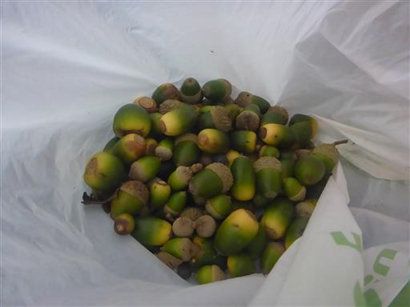
栗も落ちている。
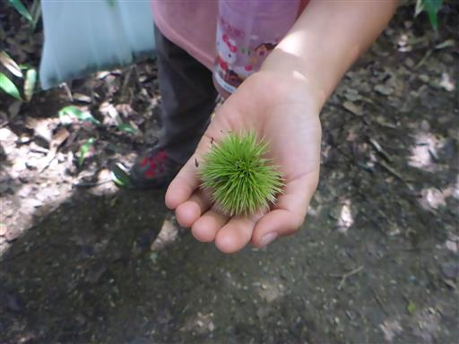
タマゴタケだろうか？
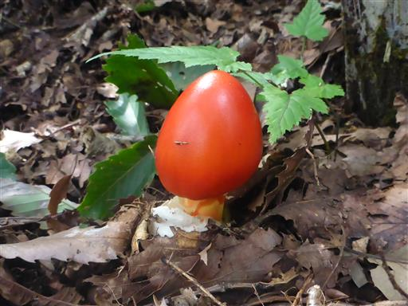
棒で突っついてみる。後で調べたら、このキノコは食べられるらしい。
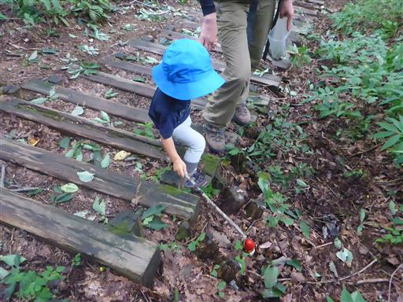
道草ばかり食っていたが、あっさりと山頂に到着する。標高855m。
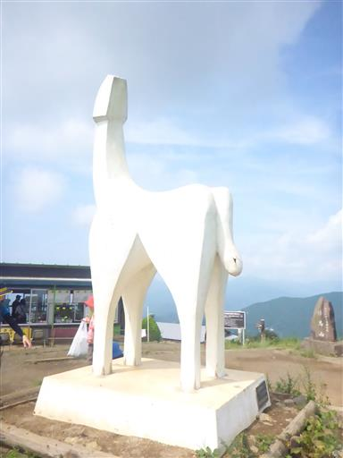
展望はそこそこあるが、雲が多い。予報通りの天気だ。
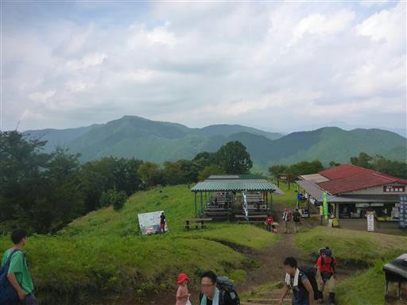
昼食をとったら子供たちは草むらで遊んでいる。
バッタ、コオロギ、トカゲ、テントウムシなどなど、様々な生き物が見つかる。
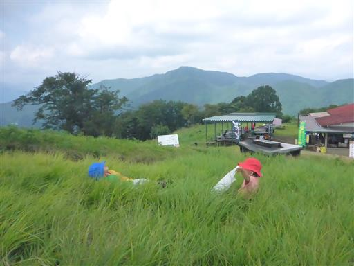
豆のような植物。中を開けてみると実があったが、豆ではなかった。
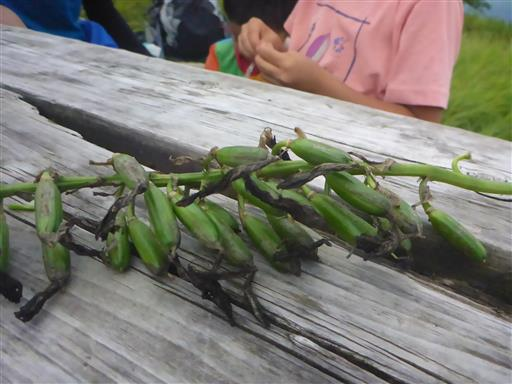
山頂で遊んだら元来た道を下山する。
息子は半分くらい歩いたところでギブアップし、残念ながら下りは全部歩ききれなかった。
歩くのは楽しそうなので、半年もすればだいぶ登れるようになりそうだ。
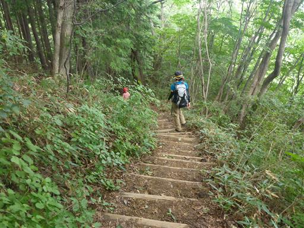
他の山行記録